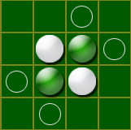

Reversi is a classic game of strategy. The goal is to capture your opponent's stones by surrounding them, vertically, horizontally, or diagonally. To capture, click on a spot at one end of a line of your opponent's stones that has one of your stones on the other end. When you capture the stones, they will "reversi" and become yours.
You must capture on each move - if there are no moves you can make, you have to pass by pressing the Turn button (or "Pass" in Reversi Deluxe). But if there are any moves, you must make them. Good strategy is to force your opponent to make moves that give you an advantage. Protect those corners -- they can turn the game around on a single click!
White goes first. On the single-player game, or in one-player mode on Reversi Deluxe, the computer plays black. Before the game starts, you can change who goes first by pressing the Turn (Pass) button before your first play.

The circles show where white can play. Each is the end of a line of enemy stones with a white stone at the other end.